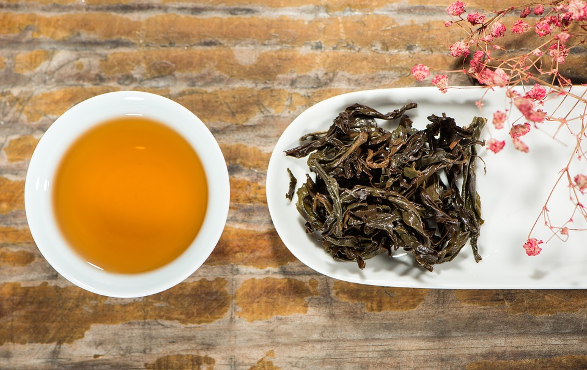

Uma mistura suave e delicada de cafés da Colômbia, Costa Rica e Ilha de Java.
Uma mistura de leite fervido com um expresso curto e chocolate amargo.
Um expresso curto com leite fervido e espuma milenar.
Esta bebida é preparada com a mesma técnica chinesa inventada no fim do século 17.

Uma bebida potente preparada com açucar orgãnico do Himalaia e uma infusão das folhas da Camellia sinensis.
• Dinheiro
• Cheque
• Cartões de crédito
○ Martercard
○ Visa
○ American Express
1.Entre na fila
3.Pague
4.Aguarde você ser chamado pelo nome.
O café StarBugs nasceu em 2017 após um erro de código. Conheça nossa missão.
Venha tomar um café conosco na Rua das Linhas, número 123-Centro ou nos envie um email para contato@starbugs.com.br.